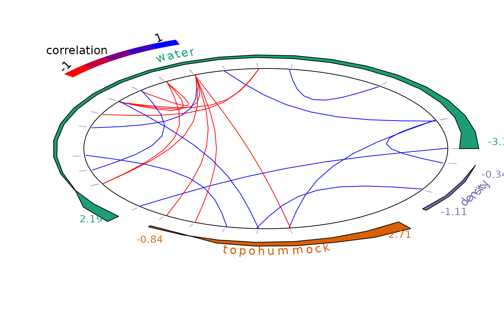
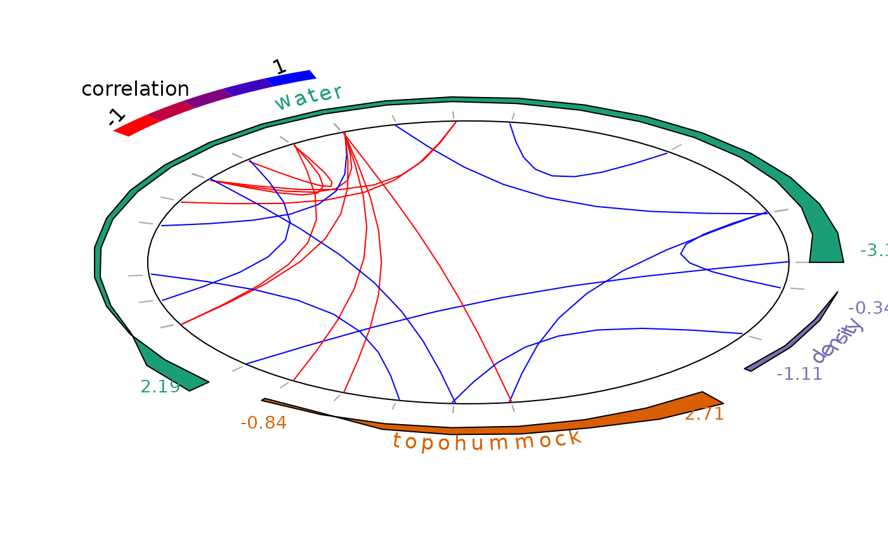

plot_associations plot species-species associations
Source:R/plot_associations.R
plot_associations.Rdplot_associations plot species-species associations
plot_associations(
R,
radius = 5,
main = NULL,
cex.main = NULL,
circleBreak = FALSE,
top = 10L,
occ = NULL,
env_effect = NULL,
cols_association = c("#FF0000", "#BF003F", "#7F007F", "#3F00BF", "#0000FF"),
cols_occurrence = c("#BEBEBE", "#8E8E8E", "#5F5F5F", "#2F2F2F", "#000000"),
cols_env_effect = c("#1B9E77", "#D95F02", "#7570B3", "#E7298A", "#66A61E", "#E6AB02",
"#A6761D", "#666666"),
lwd_occurrence = 1,
species_order = "abundance",
species_indices = NULL
)Arguments
- R
matrix of correlation \(R\)
- radius
circle's radius
- main
title
- cex.main
title's character size. NULL and NA are equivalent to 1.0.
- circleBreak
circle break or not
- top
number of top negative and positive associations to consider
- occ
species occurence data
- env_effect
environmental species effects \(\beta\)
- cols_association
color gradient for association lines
- cols_occurrence
color gradient for species
- cols_env_effect
color gradient for environmental effect
- lwd_occurrence
lwd for occurrence lines
- species_order
order species according to :
"abundance"their mean abundance at sites by default) "frequency"the number of sites where they occur "main environmental effect"their most important environmental coefficients - species_indices
indices for sorting species
Details
After fitting the jSDM with latent variables, the fullspecies residual correlation matrix : \(R=(R_{ij})\) with \(i=1,\ldots, n_{species}\) and \(j=1,\ldots, n_{species}\) can be derived from the covariance in the latent variables such as : can be derived from the covariance in the latent variables such as :
| \(\Sigma_{ij}\) | \(= \lambda_i .\lambda_j' + 1\) | if i=j |
| \(= \lambda_i .\lambda_j'\) | else, |
this function represents the correlations computed from covariances : $$R_{ij} = \frac{\Sigma_{ij}}{\sqrt{\Sigma_ii\Sigma _jj}}$$.
References
Pichler M. and Hartig F. (2021) A new method for faster and more accurate inference of species associations from big community data.
Methods in Ecology and Evolution, 12, 2159-2173 doi:10.1111/2041-210X.13687
.
See also
Examples
library(jSDM)
# frogs data
data(mites, package="jSDM")
# Arranging data
PA_mites <- mites[,1:35]
# Normalized continuous variables
Env_mites <- cbind(mites[,36:38], scale(mites[,39:40]))
colnames(Env_mites) <- colnames(mites[,36:40])
Env_mites <- as.data.frame(Env_mites)
# Parameter inference
# Increase the number of iterations to reach MCMC convergence
mod <- jSDM_poisson_log(# Response variable
count_data=PA_mites,
# Explanatory variables
site_formula = ~ water + topo + density,
site_data = Env_mites,
n_latent=2,
site_effect="random",
# Chains
burnin=100,
mcmc=100,
thin=1,
# Starting values
alpha_start=0,
beta_start=0,
lambda_start=0,
W_start=0,
V_alpha=1,
# Priors
shape=0.5, rate=0.0005,
mu_beta=0, V_beta=10,
mu_lambda=0, V_lambda=10,
# Various
seed=1234, verbose=1)
#>
#> Running the Gibbs sampler. It may be long, please keep cool :)
#>
#> **********:10.0%, mean accept. rates= beta:0.206 lambda:0.191 W:0.331 alpha:0.216
#> **********:20.0%, mean accept. rates= beta:0.245 lambda:0.229 W:0.254 alpha:0.201
#> **********:30.0%, mean accept. rates= beta:0.326 lambda:0.286 W:0.282 alpha:0.261
#> **********:40.0%, mean accept. rates= beta:0.344 lambda:0.344 W:0.366 alpha:0.354
#> **********:50.0%, mean accept. rates= beta:0.400 lambda:0.397 W:0.378 alpha:0.389
#> **********:60.0%, mean accept. rates= beta:0.409 lambda:0.438 W:0.408 alpha:0.410
#> **********:70.0%, mean accept. rates= beta:0.404 lambda:0.428 W:0.397 alpha:0.394
#> **********:80.0%, mean accept. rates= beta:0.412 lambda:0.414 W:0.388 alpha:0.429
#> **********:90.0%, mean accept. rates= beta:0.435 lambda:0.425 W:0.386 alpha:0.433
#> **********:100.0%, mean accept. rates= beta:0.412 lambda:0.424 W:0.382 alpha:0.425
# Calcul of residual correlation between species
R <- get_residual_cor(mod)$cor.mean
plot_associations(R, circleBreak = TRUE, occ = PA_mites, species_order="abundance")
 # Average of MCMC samples of species enrironmental effect beta except the intercept
env_effect <- t(sapply(mod$mcmc.sp,
colMeans)[grep("beta_", colnames(mod$mcmc.sp[[1]]))[-1],])
colnames(env_effect) <- gsub("beta_", "", colnames(env_effect))
plot_associations(R, env_effect = env_effect, species_order="main env_effect")

# Average of MCMC samples of species enrironmental effect beta except the intercept
env_effect <- t(sapply(mod$mcmc.sp,
colMeans)[grep("beta_", colnames(mod$mcmc.sp[[1]]))[-1],])
colnames(env_effect) <- gsub("beta_", "", colnames(env_effect))
plot_associations(R, env_effect = env_effect, species_order="main env_effect")
